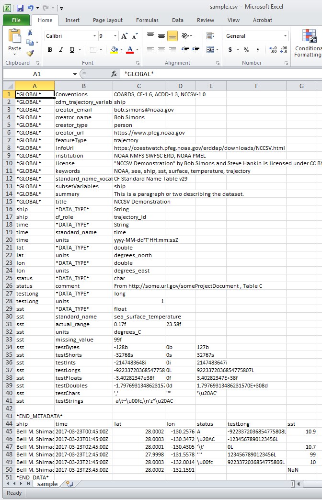

NCCSV -
A NetCDF-Compatible ASCII CSV File Specification,
Version 1.00
Bob Simons <erd.data at noaa.gov> and Steve Hankin
"NCCSV" by Bob Simons and Steve Hankin is licensed under CC BY 4.0
Contents
- Introduction
- File Structure
- The Metadata Section
- The Data Section
- DSG Feature Types
- Sample File
- Spreadsheets
- Problems/Warnings
Introduction
This document specifies an ASCII CSV text file format that can contain all of the information (metadata and data) that can be found in a NetCDF .nc file that contains a CSV-file-like table of data. The file extension for an ASCII CSV text file following this specification must be .csv so that it can be read easily and correctly into spreadsheet programs like Excel and Google Sheets. Bob Simons will write software to convert an NCCSV file into a NetCDF-3 (and perhaps also a NetCDF-4) .nc file, and the reverse, with no loss of information. Bob Simons has modified ERDDAP™ to support reading and writing this type of file.The NCCSV format is designed so that spreadsheet software such as Excel and Google Sheets can import an NCCSV file as a csv file, with all of the information in the spreadsheet's cells ready for editing. Or, a spreadsheet can be created from scratch following the NCCSV conventions. Regardless of the source of the spreadsheet, if it is then exported as a .csv file, it will conform to the NCCSV specification and no information will be lost. The only differences between NCCSV files and the analogous spreadsheet files which follow these conventions are:
- NCCSV files have values on a line separated by commas.
Spreadsheets have values on a line in adjacent cells. - Strings in NCCSV files are often surrounded by double quotes.
Strings in spreadsheets are never surrounded by double quotes. - Internal double quotes ( " ) in Strings in NCCSV files appear
as 2 double quotes.
Internal double quotes in spreadsheets appear as 1 double quote.
See the Spreadsheet section below for more information.
Streamable — Like CSV files in general, NCCSV files are streamable. Thus, if an NCSV is generated on-the-fly by a data server such as ERDDAP™, the server can start to stream data to the requester before all of the data has been gathered. This is a useful and desirable feature. NetCDF files, by contrast, are not streamable.
ERDDAP™ —
This specification is designed so that NCCSV files and the .nc files
that can be created from them can be used by an
ERDDAP™ data server
(via the
EDDTableFromNccsvFiles
and
EDDTableFromNcFiles dataset types),
but this specification is external to ERDDAP.
ERDDAP™ has several required global attributes and many recommended global
and variable attributes, mostly based on CF and ACDD attributes (see
https://erddap.github.io/setupDatasetsXml.html#globalAttributes).
Balance — The design of the NCCSV format is a balance of several requirements:
- The files must contain all of the data and metadata that would be in a tabular NetCDF file, including specific data types.
- The files must be able to be read into and then written out of a spreadsheet with no loss of information.
- The files must be easy for humans to create, edit, read, and understand.
- The files must be able to be unambiguously parsed by computer programs.
Other Specifications - This specification refers to several other specifications and libraries that it is designed to work with, but this specification is not a part of any of those other specifications, nor does it need any changes to them, nor does it conflict with them. If a detail related to one of these standards is not specified here, see the related specification. Notably, this includes:
- The Attribute Convention for Dataset Discovery (ACDD) metadata standard:
https://wiki.esipfed.org/Attribute_Convention_for_Data_Discovery_1-3 .
.
- The Climate and Forecast (CF) metadata standard:
https://cfconventions.org/Data/cf-conventions/cf-conventions-1.8/cf-conventions.html .
- The NetCDF User Guide (NUG):
https://docs.unidata.ucar.edu/netcdf-java/current/userguide/index.html .
- The NetCDF software libraries like NetCDF-java and NetCDF-c:
https://www.unidata.ucar.edu/software/netcdf/ .
These libraries cannot read NCCSV files,
but they can read .nc files created from NCCSV files.
- JSON:
https://www.json.org/
Notation - In this specification, brackets, [ ], denote optional items.
File Structure
A complete NCCSV file consists of two sections: the metadata section, followed by the data section.NCCSV files must contain only 7-bit ASCII characters. Because of this, the character set or encoding used to write and read the file may be any character set or encoding which is compatible with the 7-bit ASCII character set, e.g., ISO-8859-1. ERDDAP™ reads and writes NCCSV files with the ISO-8859-1 charset.
NCCSV files may use either newline (\n) (which is common on Linux and Mac OS X computers) or carriageReturn plus newline (\r\n) (which is common on Windows computers) as end-of-line markers, but not both.
.nccsvMetadata — When both the creator and the reader are expecting it, it is also possible and sometimes useful to make a variant of an NCCSV file which contains just the metadata section (including the *END_METADATA* line). The result provides a complete description of the file's attributes, variable names, and data types, thus serving the same purpose as the .das plus .dds responses from an OPeNDAP server. ERDDAP™ will return this variation if you request fileType=.nccsvMetadata from an ERDDAP™ dataset.
The Metadata Section
In an NCCSV file, each line of the metadata section uses the formatvariableName,attributeName,value1[,value2][,value3][,value4][...]
Spaces before or after items are not allowed because they cause problems when importing the file into spreadsheet programs.
Conventions -
The first line of an NCCSV file is the first line of the metadata section and
must have a *GLOBAL*
Conventions attribute listing all of the
conventions used in the file as a String containing a CSV list, for example:
*GLOBAL*,Conventions,"COARDS, CF-1.6, ACDD-1.3, NCCSV-1.0"
One of the conventions listed must be NCCSV-1.0,
which refers to the current version of this specification.
*END_METADATA* -
The end of the metadata section of an NCCSV file must be denoted by a
line with only
*END_METADATA*
It is recommended but not required that all of the attributes for a given variable appear on adjacent lines of the metadata section. If an NCCSV file is converted into a NetCDF file, the order that the variableNames first appear in the metadata section will be the order of the variables in the NetCDF file.
Optional blank lines are allowed in the metadata section after the required first line with *GLOBAL* Conventions information (see below) and before the required last line with *END_METADATA*.
If a spreadsheet is created from an NCCSV file, the metadata data section will appear with variable names in column A, attribute names in column B, and values in column C.
If a spreadsheet following these conventions is saved as a CSV file, there will often be extra commas at the end of the lines in the metadata section. The software that converts NCCSV files into .nc files will ignore the extra commas.
variableName
variableName is the case-sensitive name of a variable in the data file. All variable names must begin with a 7-bit ASCII letter or underscore and be composed of 7-bit ASCII letters, underscores, and 7-bit ASCII digits. The special variableName *GLOBAL* is used to denote global metadata.attributeName
attributeName is the case-sensitive name of an attribute associated with a variable or *GLOBAL*. All attribute names must begin with a 7-bit ASCII letter or underscore and be composed of 7-bit ASCII letters, underscores, and 7-bit ASCII digits.*SCALAR* — The special attributeName *SCALAR* can be used to create a scalar data variable and define its value. The data type of the *SCALAR* defines the data type for the variable, so do not specify a *DATA_TYPE* attribute for scalar variables. Note that there must not be data for the scalar variable in the Data Section of the NCCSV file.
For example, to create a scalar variable named "ship"
with the value "Okeanos Explorer" and a cf_role attribute, use:
ship,*SCALAR*,"Okeanos Explorer"
ship,cf_role,trajectory_id
When a scalar data variable is read into ERDDAP™,
the scalar value is converted into a column in the data table with the
same value on every row.
value
value is the value of the metadata attribute
and must be an array with one or more of either a
byte, short, int, long, float, double, String, or char.
No other data types are supported. Attributes with no value will be ignored.
If there is more than one sub-value, the sub-values must all be of the
same data type and separated by commas, for example:
sst,actual_range,0.17f,23.58f
If there are multiple String values, use a single String with
\n (newline) characters separating the substrings.
The definitions of the attribute data types are:
- byte
attribute values (8-bit, signed) must be written with the
suffix 'b', e.g., -7b, 0b, 7b . The range of valid byte values is -128 to 127.
A number that looks like a byte but is invalid (e.g., 128b)
will generate an error message.
- short
attribute values (16-bit, signed) must be written with the
suffix 's', e.g., -30000s, 0s, 30000s. The range of valid short values is
-32768 to 32767. A number that looks like a short but is invalid
(e.g., 32768s) will generate an error message.
- int
attribute values (32-bit, signed) must be written as JSON ints
without a decimal point or exponent, but with the suffix 'i',
e.g., -12067978i, 0i, 12067978i. The range of valid int values is
-2147483648 to 2147483647. A number that looks like an int but is invalid
(e.g., 2147483648i) will generate an error message.
- long
attribute values (64-bit, signed, currently supported by
NUG and ERDDAP™ but not yet supported by CF) must be written without
a decimal point and with the suffix 'L',
e.g., -12345678987654321L, 0L, 12345678987654321L .
If you use the converting software to convert an NCCSV file with long
values into a NetCDF-3 file, any long values will be converted to double values.
The range of valid long values is -9223372036854775808 to 9223372036854775807.
A number that looks like a long but is invalid (e.g., 9223372036854775808L)
will generate an error message.
- float
attribute values (32-bit) must be written with the suffix 'f'
and may have a decimal point and/or an exponent,
e.g., 0f, 1f, 12.34f, 1e12f, 1.23e+12f, 1.23e12f, 1.87E-7f.
Use NaNf for a float NaN (missing) value.
The range of floats is approximately
+/-3.40282347E+38f (~7 significant decimal digits).
A number that looks like a float but is invalid (e.g., 1.0e39f)
will generate an error message.
- double
attribute values (64-bit) must be written
with the suffix 'd' and may have a decimal point and/or an exponent,
e.g., 0d, 1d, 12.34d, 1e12d, 1.23e+12d, 1.23e12d, 1.87E-7d.
Use NaNd for a double NaN (missing) value.
The range of doubles is approximately +/-1.79769313486231570E+308d
(~15 significant decimal digits).
A number that looks like a double but is invalid (e.g., 1.0e309d)
will generate an error message.
- String
attribute values are a sequence of UCS-2 characters
(i.e., 2-byte Unicode characters, as in Java),
which must be written as 7-bit ASCII, JSON-like strings
so that non-ASCII characters can be specified.
- Double quotes (") must be encoded as two double quotes (""). That's what spreadsheet programs require when reading .csv files. That's what spreadsheet programs write when you save a spreadsheet as a .csv file.
- The special JSON backslash-encoded characters must be encoded as in JSON (notably \n (newline), but also \\ (backslash), \f (formfeed), \t (tab), \r (carriage return) or with the \uhhhh syntax. In a spreadsheet, don't use Alt Enter to specify a new line within a text cell; instead, use \n (2 characters: backslash and 'n') to indicate a new line.
- \uhhhh -
All characters less than character #32 or greater than character #126,
and not otherwise encoded, must be encoded with the syntax
\uhhhh, where hhhh is the 4-digit hexadecimal
number of the character, e.g., the Euro sign is \u20AC.
See the code pages referenced at
https://en.wikipedia.org/wiki/Unicode
to find the hexadecimal numbers associated with specific Unicode characters,
or use a software library.
- If the String has a space at the beginning or end, or includes " (double quote) or a comma, or contains values that would otherwise be interpreted as some other data type (e.g., an int), or is the word "null", the entire String must be enclosed in double quotes; otherwise, unlike JSON, the enclosing double quotes are optional. We recommend: when in doubt, enclose the entire String in double quotes. Spaces at the beginning or end of a String are strongly discouraged.
- For now, the use of characters greater than #255 is discouraged.
NCCSV supports them. ERDDAP™ supports them internally. Some output file types
support them (e.g., .json and .nccsv).
But many output file types don't support them.
For example, NetCDF-3 files do not support such characters because NetCDF files
use 1-byte characters and CF currently does not have a system for
specifying how Unicode characters are encoded in NetCDF Strings (e.g., UTF-8).
This will probably improve over time.
- char attribute values are a single UCS-2 character (i.e., 2-byte Unicode characters, as in Java), which must be written as 7-bit ASCII, JSON-like characters so that other characters can be specified (see the String definition above for encoding of special characters, with the addition of encoding a single quote as \'). Char attribute values must be enclosed in single quotes (the inner quotes) and double quotes (the outer quotes), e.g., "'a'", "'""'" (a double quote character), "'\''" (a single quote character), "'\t'" (a tab), "'\u20AC'" (a Euro character). This system of using single and double quotes is odd and cumbersome, but it is a way to distinguish char values from Strings in a way that works with spreadsheets. A value that looks like a char but is invalid will generate an error message. As with Strings, the use of characters greater than #255 is currently discouraged.
Suffix — Note that in the attributes section of an NCCSV file, all numeric attribute values must have a suffix letter (e.g., 'b') to identify the numeric data type (e.g., byte). But in the data section of an NCCSV file, numeric data values must never have these suffix letters (with the exception of 'L' for long integers) — the data type is specified by the *DATA_TYPE* attribute for the variable.
*DATA_TYPE* -
The data type for each non-scalar
variable must be specified by a
*DATA_TYPE* attribute which can have a value of
byte, short, int, long, float, double, String, or char
(case insensitive). For example,
qc_flag,*DATA_TYPE*,byte
WARNING: Specifying the correct *DATA_TYPE* is your responsibility.
Specifying the wrong data type (e.g., int when you should have
specified float) will not generate an error message and may cause
information to be lost (e.g., float values will be rounded to ints)
when the NCCSV file is read by ERDDAP™ or converted into a NetCDF file.
char Discouraged - The use of char data values is discouraged because they are not widely supported in other file types. char values may be written in the data section as single characters or as Strings (notably, if you need to write a special character). If a String is found, the first character of the String will be used as the char's value. Zero length Strings and missing values will be converted to character \uFFFF. Note that NetCDF files only support single byte chars, so any chars greater than char #255 will be converted to '?' when writing NetCDF files. Unless a charset attribute is used to specify a different charset for a char variable, the ISO-8859-1 charset will be used.
long Discouraged - Although many file types (e.g., NetCDF-4 and json) and ERDDAP™ support long data values, the use of long data values in NCCSV files is currently discouraged because they are currently not supported by Excel, CF and NetCDF-3 files. If you want to specify long data values in an NCCSV file (or in the corresponding Excel spreadsheet), you must use the suffix 'L' so that Excel doesn't treat the numbers as floating point numbers with lower precision. Currently, if an NCCSV files is converted into a NetCDF-3 .nc file, long data values will be converted into double values, causing a loss of precision for very large values (less than -2^53 or greater than 2^53).
CF, ACDD, and ERDDAP™ Metadata -
Since it is envisioned that most NCCSV files, or the .nc files
created from them, will be read into ERDDAP,
it is strongly recommended that NCCSV files include the metadata attributes
which are required or recommended by ERDDAP™ (see
https://erddap.github.io/setupDatasetsXml.html#globalAttributes).
The attributes are almost all from the CF and ACDD metadata standards and
serve to properly describe the dataset (who, what, when, where, why, how)
to someone who otherwise knows
nothing about the dataset. Of particular importance,
almost all numeric variables should have a units
attribute with a UDUNITS-compatible value, e.g.,
sst,units,degree_C
It is fine to include additional attributes which are not from the CF or ACDD standards or from ERDDAP.
The Data Section
Structure
The first line of the data section must have a case-sensitive, comma-separated list of variable names. All of the variables in this list must be described in the metadata section, and vice versa (other than *GLOBAL* attributes and *SCALAR* variables).The second through the penultimate lines of the data section must have a comma-separated list of values. Each row of data must have the same number of values as the comma-separated list of variable names. Spaces before or after values are not allowed because they cause problems when importing the file into spreadsheet programs. Each column in this section must contain only values of the *DATA_TYPE* specified for that variable by the *DATA_TYPE* attribute for that variable. Unlike in the attributes section, numeric values in the data section must not have suffix letters to denote the data type. Unlike in the attributes section, char values in the data section may omit the enclosing single quotes if they are not needed for disambiguation (thus, ',' and '\'' must be quoted as shown here). There may be any number of these data rows in an NCCSV file, but currently ERDDAP™ can only read NCCSV files with up to about 2 billion rows. In general, it is recommended that you split large datasets into multiple NCCSV data files with fewer than 1 million rows each.
*END_DATA* -
The end of the data section must be denoted by a line with only
*END_DATA*
If there is additional content in the NCCSV file after the *END_DATA* line, it will be ignored when the NCCSV file is converted into an .nc file. Such content is therefore discouraged.
In a spreadsheet following these conventions, the variable names and data values will be in multiple columns. See the example below.
Missing Values
Numeric missing values may be written as a numeric value identified by a
missing_value or _FillValue attribute for that variable.
For example, see the second value on this data row:
Bell M. Shimada,99,123.4
This is the recommended way to handle missing values for
byte, short, int, and long variables.
float or double NaN values may be written as NaN.
For example, see the second value on this data row:
Bell M. Shimada,NaN,123.4
String and numeric missing values may be indicated by an empty field.
For example, see the second value on this data row:
Bell M. Shimada,,123.4
For byte, short, int, and long variables,
the NCCSV converter utility and ERDDAP™ will convert an empty field
into the maximum allowed value for that data type (e.g., 127 for bytes).
If you do this, be sure to add a missing_value or
_FillValue attribute for that variable to identify this value,
e.g.,
variableName,_FillValue,127b
For float and double variables, an empty field will be converted to NaN.
DateTime Values
DateTime values (including date values that don't have a time component) may be represented as numbers or as Strings in NCCSV files. A given dateTime variable may only have String values or only numeric values, not both. The NCCSV software will convert String dateTime values into numeric dateTime values when creating .nc files (as required by CF). String dateTime values have the advantage of being easily readable by humans.DateTime values represented as numeric values must have a
units attribute which specifies the "units since dateTime"
as required by CF and specified by UDUNITS, e.g.,
time,units,seconds since 1970-01-01T00:00:00Z
DateTime values represented as String values must have a
String *DATA_TYPE* attribute and a units attribute
which specifies a dateTime pattern as specified by the
Java DateTimeFormatter class
(https://docs.oracle.com/javase/8/docs/api/java/time/format/DateTimeFormatter.html). For example,
time,units,yyyy-MM-dd'T'HH:mm:ssZ
All dateTime values for a given data variable must use the same format.
In most cases, the dateTime pattern you need for the units
attribute will be a variation of one of these formats:
- yyyy-MM-dd'T'HH:mm:ss.SSSZ — which is the ISO 8601:2004(E) dateTime format. You may need a shortened version of this, e.g., yyyy-MM-dd'T'HH:mm:ssZ (the only recommended format) or yyyy-MM-dd. If you are changing the format of your dateTime values, NCCSV strongly recommends that you change to this format (perhaps shortened). This is the format that ERDDAP™ will use when it writes NCCSV files.
- yyyyMMddHHmmss.SSS — which is the compact version of the ISO 8601:2004 dateTime format. You may need a shortened version of this, e.g., yyyyMMdd.
- M/d/yyyy H:mm:ss.SSS — which handles US-style dates and dateTimes like "3/23/2017 16:22:03.000". You may need a shortened version of this, e.g., M/d/yyyy .
- yyyyDDDHHmmssSSS — which is the year plus the zero-padded day of the year (e.g, 001 = Jan 1, 365 = Dec 31 in a non-leap year; this is sometimes erroneously called the Julian date). You may need a shortened version of this, e.g., yyyyDDD .
Precision —
When a software library converts an .nc file into an NCCSV file,
all dateTime values will be written as Strings with the
ISO 8601:2004(E) dateTime format, e.g., 1970-01-01T00:00:00Z .
You can control the precision with the ERDDAP-specific attribute
time_precision. See
https://erddap.github.io/setupDatasetsXml.html#time_precision.
Time Zone —
The default time zone for dateTime values is the Zulu (or GMT)
time zone, which has no daylight saving time periods.
If a dateTime variable has dateTime values from a different time zone,
you must specify this with the ERDDAP-specific attribute time_zone.
This is a requirement for ERDDAP™ (see
https://erddap.github.io/setupDatasetsXml.html#time_zone).
Degree Values
As required by CF, all degree values (e.g., for longitude and latitude) must be specified as decimal-degree double values, not as a degree°min'sec" String or as separate variables for degrees, minutes, seconds. The direction designators N, S, E, and W are not allowed. Use negative values for West longitudes and for South latitudes.
DSG Feature Types
An NCCSV file may contain CF Discrete Sampling Geometry(https://cfconventions.org/Data/cf-conventions/cf-conventions-1.8/cf-conventions.html#discrete-sampling-geometries
) data. It is the attributes that make this work:
- As required by CF, the NCCSV file must include a line in the
metadata section identifying the *GLOBAL*
featureType attribute, e.g.,
*GLOBAL*,featureType,trajectory - For use in ERDDAP™, the NCCSV file must include a line or lines
in the metadata section identifying the cf_role=..._id variables, e.g.,
ship,cf_role,trajectory_id
This is optional for CF, but required in NCCSV. - For use in ERDDAP™, the NCCSV file must include a line or lines
in the metadata section identifying which variables are associated
with each timeSeries, trajectory, or profile as required by ERDDAP™ (see
https://erddap.github.io/setupDatasetsXml.html#cdm_data_type), e.g.,
*GLOBAL*,cdm_trajectory_variables,"ship"
or
*GLOBAL*,cdm_timeseries_variables,"station_id,lat,lon"
Sample File
Here is a sample file which demonstrates many of the features of an NCCSV file:
*GLOBAL*,Conventions,"COARDS, CF-1.6, ACDD-1.3, NCCSV-1.0"
*GLOBAL*,cdm_trajectory_variables,"ship"
*GLOBAL*,creator_email,erd.data@noaa.gov
*GLOBAL*,creator_name,Bob Simons
*GLOBAL*,creator_type,person
*GLOBAL*,creator_url,https://www.pfeg.noaa.gov
*GLOBAL*,featureType,trajectory
*GLOBAL*,infoUrl,https://erddap.github.io/NCCSV.html
*GLOBAL*,institution,"NOAA NMFS SWFSC ERD, NOAA PMEL"
*GLOBAL*,license,"""NCCSV Demonstration"" by Bob Simons and Steve Hankin is
licensed under CC BY 4.0, https://creativecommons.org/licenses/by/4.0/ ."
*GLOBAL*,keywords,"NOAA, sea, ship, sst, surface, temperature, trajectory"
*GLOBAL*,standard_name_vocabulary,CF Standard Name Table v55
*GLOBAL*,subsetVariables,"ship"
*GLOBAL*,summary,"This is a paragraph or two describing the dataset."
*GLOBAL*,title,"NCCSV Demonstration"
ship,*DATA_TYPE*,String
ship,cf_role,trajectory_id
time,*DATA_TYPE*,String
time,standard_name,time
time,units,"yyyy-MM-dd'T'HH:mm:ssZ"
lat,*DATA_TYPE*,double
lat,units,degrees_north
lon,*DATA_TYPE*,double
"lon","units","degrees_east"
status,*DATA_TYPE*,char
status,comment,"From http://some.url.gov/someProjectDocument , Table C"
testLong,*DATA_TYPE*,long
testLong,units,1
sst,*DATA_TYPE*,float
sst,standard_name,sea_surface_temperature
sst,actual_range,0.17f,23.58f
sst,units,degree_C
sst,missing_value,99f
sst,testBytes,-128b,0b,127b
sst,testShorts,-32768s,0s,32767s
sst,testInts,-2147483648i,0i,2147483647i
sst,testLongs,-9223372036854775808L,0L,9223372036854775807L
sst,testFloats,-3.40282347e38f,0f,3.40282347E+38f
sst,testDoubles,-1.79769313486231570e308d,0d,1.79769313486231570E+308d
sst,testChars,"','","'""'","'\u20AC'"
sst,testStrings," a~,\n'z""\u20AC"
*END_METADATA*
ship,time,lat,lon,status,testLong,sst
Bell M. Shimada,2017-03-23T00:45:00Z,28.0002,-130.2576,A,-9223372036854775808L,10.9
Bell M. Shimada,2017-03-23T01:45:00Z,28.0003,-130.3472,\u20AC,-1234567890123456L,
"Bell M. Shimada","2017-03-23T02:45:00Z",28.0001,-130.4305,"'\t'",0L,10.7
Bell M. Shimada,2017-03-23T12:45:00Z,27.9998,-131.5578,"'""'",1234567890123456L,99
Bell M. Shimada,2017-03-23T21:45:00Z,28.0003,-132.0014,\u00fc,9223372036854775806L,10.0
Bell M. Shimada,2017-03-23T23:45:00Z,28.0002,-132.1591,,NaN
Notes:
- This sample file includes many difficult cases (e.g., char and long variables and difficult String values). Most NCCSV files will be much simpler.
- The license line is broken into two lines here, but is just one line in the sample file.
- \u20AC is the encoding of the Euro character and \u00FC is the encoding of ü.
- Many Strings in the example are enclosed by double quotes even though they don't have to be, e.g., many global attributes including the title, the lon units attribute, and the 3rd line of data.)
- It would be clearer and better if the units attribute for the testLong variable were written in double quotes indicating it is a String value. But the current representation (1, without quotes) will be interpreted correctly as a String, not an integer, because there is no 'i' suffix.
- Unlike other numeric data types, the long values in the data section have the suffix ('L') that identifies their numeric data type. This is required to prevent spreadsheets from interpreting the values as floating point numbers and thus losing precision.
Spreadsheets
In a spreadsheet, as in an NCCSV file:- Write numeric attribute values as specified for NCCSV files (e.g., with a suffix letter, e.g., 'f', to identify attribute's data type).
- In Strings, write all characters less than ASCII character #32 or greater than character #126 as either a JSON-like backslashed character (e.g., \n for newline) or as the hexadecimal Unicode character number (case insensitive) with the syntax \uhhhh (e.g., \u20AC for the Euro sign). Use \n (2 characters: backslash and 'n') to indicate a new line, not Alt Enter.
The only differences between NCCSV files and the analogous spreadsheet which follow these conventions are:
- NCCSV files have values on a line separated by commas.
Spreadsheets have values on a line in adjacent cells. - Strings in NCCSV files are often surrounded by double quotes.
Strings in spreadsheets are never surrounded by double quotes. - Internal double quotes ( " ) in Strings in NCCSV files appear as
2 double quotes.
Internal double quotes in spreadsheets appear as 1 double quote.
If a spreadsheet following these conventions is saved as a CSV file, there will often be extra commas at the end of many of the lines. The software that converts NCCSV files into .nc files will ignore the extra commas.
Excel
To import an NCCSV file into Excel:
- Choose File : Open .
- Change the file type to Text Files (*.prn; *.txt; *.csv) .
- Search the directories and click on the NCCSV .csv file.
- Click Open .
To create an NCCSV file from an Excel spreadsheet:
- Choose File : Save As .
- Change the Save as type: to be CSV (Comma delimited) (*.csv) .
- In response to the compatibility warning, click Yes .
- The resulting .csv file will have extra commas at the end of all the rows other than the CSV rows. You can ignore them.
In Excel, the sample NCCSV file above appears as

Google Sheets
To import an NCCSV file into Google Sheets:- Choose File : Open .
- Choose to Upload a file and click on
Upload a file from your computer .
Select the file, then click Open .
Or, choose My Drive and change the file type drop down selection to All file types . Select the file, then click Open .
To create an NCCSV file from a Google Sheets spreadsheet:
- Choose File : Save As .
- Change the Save as type: to be CSV (Comma delimited) (*.csv) .
- In response to the compatibility warning, click Yes .
- The resulting .csv file will have extra commas at the end of all the rows other than the CSV rows. Ignore them.
Problems/Warnings
- If you create an NCCSV file with a text editor or if you create an analogous spreadsheet in a spreadsheet program, the text editor or the spreadsheet program will not check that you followed these conventions correctly. It is up to you to follow these conventions correctly.
- The conversion of a spreadsheet following this convention into a csv file (thus, an NCCSV file) will lead to extra commas at the end of all the rows other than the CSV data rows. Ignore them. The software then converts NCCSV files into .nc files will ignore them.
- If an NCCSV file has excess commas at the end of rows, you can remove them by converting the NCCSV file into a NetCDF file and then converting the NetCDF file back into a NCCSV file.
- When you try to convert an NCCSV file into a NetCDF file, some errors
will be detected by the software and will generate error messages,
causing the conversion to fail.
Other problems are hard or impossible to catch and will not
generate error messages or warnings. Other problems
(e.g., excess commas at the end of rows) will be ignored.
The file converter will do only minimal checking of correctness
of the resulting NetCDF file, e.g., in regards to CF compliance.
It is the file creator's and file user's responsibility to check
that the results of the conversion are as desired and correct.
Two ways to check are:
- Print the contents of the .nc file with ncdump
(https://linux.die.net/man/1/ncdump
).
- View the contents of the data in ERDDAP.
- Print the contents of the .nc file with ncdump
Contact
Questions, comments, suggestions? Please send an email to erd dot data at noaa dot gov .ERDDAP, Version 2.25_1
Disclaimers |
Privacy Policy